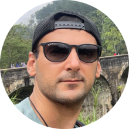

|  | Kostanian ArturMan who likes to traveling by WORLD! Was borned and grow up in Ukraine🇺🇦, at 21y.o. graduate Law Academy and strart to work by lawyer in Kyiv (cfpital of Ukraine). In 2013 was awarded by scholarship and go to China for studing PhD (Law). That was long and interesting jorney of 5 year. After that trip i back to Ukraine and sturts my consulting business. After Russia invasion ⚔️ to Ukraine started to learn web development and move to Canada |